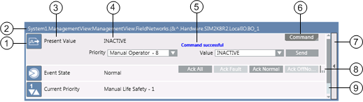
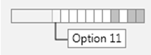
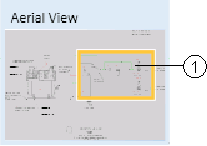
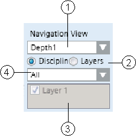

Graphics Viewer Workspace
The components that make up the Graphics Viewer consist of a toolbar, two views for navigating the active graphic, keyboard and mouse shortcuts, and tooltips. Review the following topics as needed:
Graphics Viewer Toolbar
The Graphics Viewer toolbar allows you to navigate to and work with graphic pages displayed in the Graphics Viewer. Use your cursor to select a toolbar button.
Graphics Viewer Toolbar Operating Mode | ||
| Name | Description |
| Edit | Allows you to toggle between the Graphics Viewer and the Graphics Editor. |
| Next Related Item | Allows you to scroll to and display the next graphical related item associated with the selected data point in System Browser. |
| Previous Related Item | Allows you to scroll to and display the previous graphical related item associated with the selected data point in System Browser. |
| Zoom In (+20%) | Allows you to zoom in by + 20% on the active graphic with each mouse click. |
| Zoom Out (-20%) | Allows you to zoom out by - 20% on the active graphic with each mouse click. |
| 100% | Displays the active graphic at 100% magnification. |
| Home | Returns the view of the displayed graphic to the state when the primary selection changed. |
| Zoom View | Displays the Zoom view and allows you to zoom in on the active graphic by adjusting the slider.
|
| Aerial View | Switches between Aerial View being visible or hidden in the Graphics Viewer area. |
| Zoom Real | Allows you to zoom in on the active graphic. To activate, click the icon. To de-activate, left- click anywhere on the graphic. |
| Scale to fit | Scales the graphic to fit in the viewing area. Once selected, the graphic resizes itself according to window size. NOTE: For graphics that are configured with the Auto-Fit property enabled, Scale-to-Fit is automatically enabled when displayed in the Graphics Viewer in Operating mode. NOTE 2: Graphic Templates always display with Scale-to-Fit enabled when displayed in the Graphics Viewer in Operating mode. |
| Point Centered display mode | Moves the selected Point or Group to the center of the graphic. Selecting None disables the centering. |
| Fit to Secondary Selection | Allows you to calculate the depth and the viewport from the current selection. |
| Depths Navigation View | Switches between Depths Navigation view being visible or hidden in the Graphics Viewer area. |
| Show Status and Commands pane | Allows you to enable or disable the Status and Commands window from displaying. |
| Coverage Area mode | When this icon is enabled, it allows you to view the coverage areas on the graphic. |
| Page setup | Displays the Page setup view for the current graphic. |
| Displays the Print dialog box to print the current graphic. | |


Keyboard Shortcuts
Below is a list of available keyboard shortcuts you can apply to the active graphic or one of its children. A graphic is made active by clicking on the graphic.
You can use a set of keyboard shortcuts to view the active graphic in the Graphics Viewer. Before applying any of the shortcuts, make sure the appropriate graphic is active by clicking on it.
Press... | To … |
In System Browser, select the Graphics root node. Click on the empty canvas in the Primary pane and then click CTRL +F5 | Clears the symbol cache. NOTE: The symbol cache will only clear if there is no graphic associated with the Graphics root node. |
F12 | Toggle the Aerial View on/off |
CTRL+A | Select all elements |
HOME | Scroll to the left |
END | Scroll to the right |
CTRL+HOME | Scroll to the top |
CTRL+END | Scroll to the bottom |
PAGE UP | Scroll up |
PAGE DOWN | Scroll down |
UP, LEFT, DOWN, RIGHT ARROWS | If not in Panning mode: Move selected elements by 1 pixel. If in Panning mode: Pan the view by 1 pixel. If modifying a line/polyline node: Move the node by 1 pixel. |
CTRL+UP, CTRL+LEFT, CTRL+DOWN, CTRL+RIGHT ARROWS | If not in Panning mode: Move selected elements by the grid pixels. If in Panning mode: Pan the view by the grid pixels. If modifying a line/polyline node: Move the node by the grid pixels. |
CTRL+0 | Zoom = 100% |
SPACEBAR | Activate Quick Panning mode. The previous tool mode is restored when the key is released. |
MINUS SIGN | Zoom out (-20%) |
PLUS SIGN | Zoom In (+20%) |
Z-key | Activates Quick Zoom mode. Cursor changes to the |
 magnifying glass and allows you to draw a viewport directly on the active graphic. The previous tool mode is restored when the key is released.
magnifying glass and allows you to draw a viewport directly on the active graphic. The previous tool mode is restored when the key is released.Mouse Functions
The following mouse functions are available in the active graphic once you have activated Zoom mode, either by clicking one of the zoom buttons on the toolbar or by pressing the Z-Key. You can use mouse button-wheel shortcuts to view the active graphic in the Graphics Viewer. Before applying any of the shortcuts, make sure the appropriate graphic is active by clicking on it.
Click... | To … |
CTRL +MOUSE WHEEL | Zoom in and out (+ or - 20%) |
LEFT MOUSE BUTTON | Zoom in (+20%) |
RIGHT MOUSE BUTTON | Zoom out (-20%) |
Status and Commands Window

The Status and Commands window displays the following information about an object, its properties, and its status.
| Name | Description |
1 | Icon | Displays the icon associated with the property type. |
2 | Object path and object name | The path and the name of the object. |
3 | Property name | Displays the name of one or more properties associated with the object the selected objects. If you select multiple objects of the same type in the system, the icon next to the property name indicates this with a triangular symbol in the lower right-hand corner. Clicking this symbol expands the table row to show all of the selected objects of the same type that share this property. You can then change all properties for the selected objects at the same time. |
4 | Current value | Displays the current value of each property. |
5 | Argument area and Progress/Result area | When you initiate a command that requires additional arguments, the required argument fields display for you to enter one or more arguments prior to sending the command. You must complete all required arguments before sending the command. An argument field that displays a red border around it means that the value for that property is invalid. You will need to enter a valid value before commanding the property. Displays the progress and then the result of a command, once you execute a command. During the command, the Progress/Result field displays |
6 | Command area | Displays the name of a command that you can initiate. If a command button has a triangle in the lower right-hand corner, the command has multiple buttons or options, and clicking on the triangle displays the options. Some commands are sent immediately after you initiate them by clicking on the Command button. Others require you to enter arguments before they can be sent. When a command requires arguments (additional fields requiring information to continue with the command), the property row will expand after you click the command button. You then complete the additional fields and click the appropriate button (Send, Command, etc.). Some object properties support grouping of command buttons under a single command button with a drop-down list of your choices. The button you choose from the drop-down list becomes the new commandable button in the group. The Send button displays only for commands that require additional arguments. Clicking the Send button sends a command after you have entered all required arguments. Command Types: Multiple Option Selection:  Visual display of associated properties. Each slot represents a property option. If a property is selected, it is shaded. Moving your cursor over the slot allows you to view the property option; clicking on the slot allows you to select the option. |
7 | Expand/Collapse button | Allows you to expand, collapse, or close the window :
Closes a Status and Commands window completely, if there are no properties in an off-normal state. |
8 | Scroll-view indicator | Indicates whether more buttons are available, yet not visible, and where the buttons are displayed. When you move the mouse over the scroll-view indicator, East-West cursor displays, and allows you to scroll through the commands. More command buttons are to the right of the last displayed button. More buttons are to the left of the first displayed button. There are more buttons on either side of the visible buttons. |
9 | Scrollbar | Displays when the window has run out of space, and allows you to scroll through the active properties. |
Status and Commands Connection Lines
Visibility of the connection line and its connection point are controlled as follows:
- A connection line and its connection point are only visible if the element is visible.
- An element is only visible when the layer is visible that contains the element.
- A layer is only visible if a depth is visible that contains that particular layer.
- A Status and Commands window is only displayed when there is at least one connection to an element.
Views
The Graphics Viewer provides you with two floating views, the Aerial View and the Graphic Navigation View, to help you navigate the active graphic. Both views can be resized and toggled to display or not, using the GraphicsViewer toolbar.
Aerial View
The Aerial View provides you with a bird’s-eye view of the active graphic at all times. The viewport rectangle, a rectangular shaped border within the Aerial View, provides a visual representation of the region that has the current focus. You can also draw a viewport rectangle in the area you would like to zoom in on, or click and drag the viewport to move to another location on the graphic.

Aerial View | ||
| Name | Description |
1 | Viewport Rectangle | Allows you to view graphics in part or as a whole. |
Navigation View
The Graphic Navigation View allows you to customize and navigate through views of the active graphic by selecting a depth and then filtering, by discipline or by layer, which of the associated layers to display. If you choose to filter the layers by discipline, only the layers designated with that discipline display in the graphic view. Otherwise, if you filter on layers only, all the layers of the selected depth display in the Graphic Navigation View, and you can manually choose which layers will be visible in the current view of the graphic.

Navigation View | ||
| Name | Description |
1 | Selected Depth | Displays the active depth. Use the drop-down menu to select from a list of available depths. |
2 | Filtering | Allows you to select how to filter the layers associated with the selected depth. You can filter the layers by Discipline or by Layers. |
3 | Discipline Selection | Displays the discipline used to filter the associated layers with. Use the drop-down menu to choose from a list of available disciplines. The active graphic will only display layers designated with the selected discipline. This section is only active if you have selected to filter the depth by Discipline. |
4 | Layer Selection | Displays the list of available layers associated with the selected depth. If a layer is checked, the associated layer displays in the current graphic view. If unchecked, the layer does not display. This section is only active if you have selected to filter the selected depth of the graphic by Layer. |